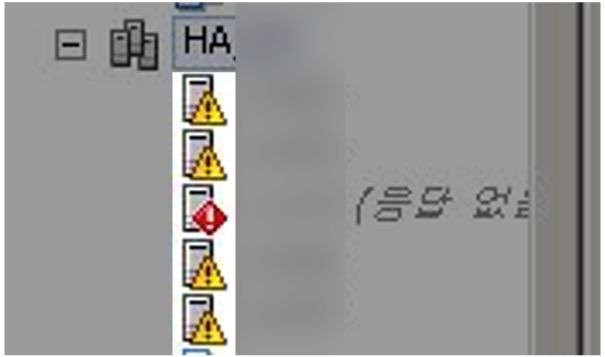
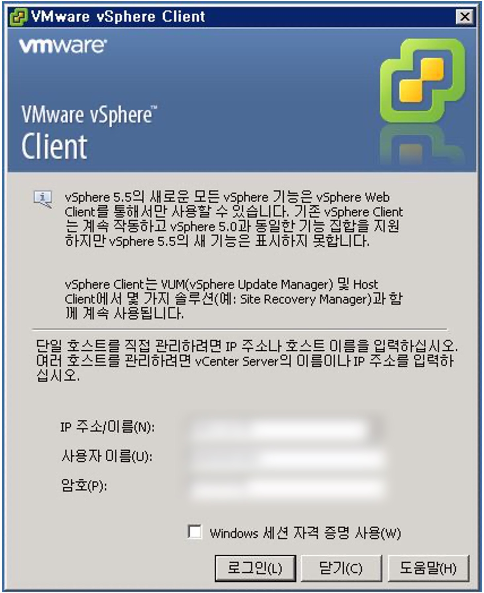
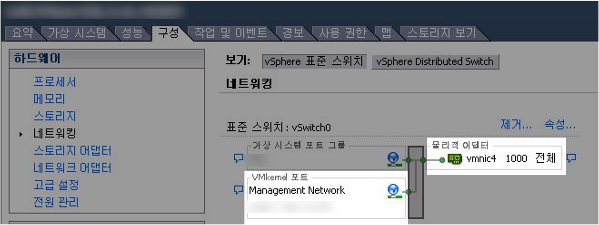
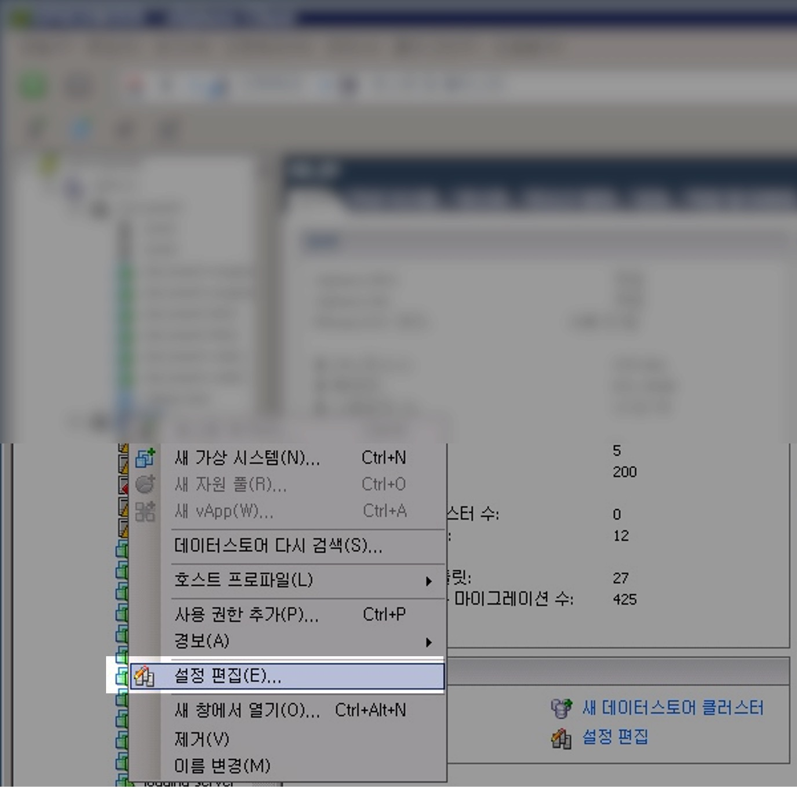
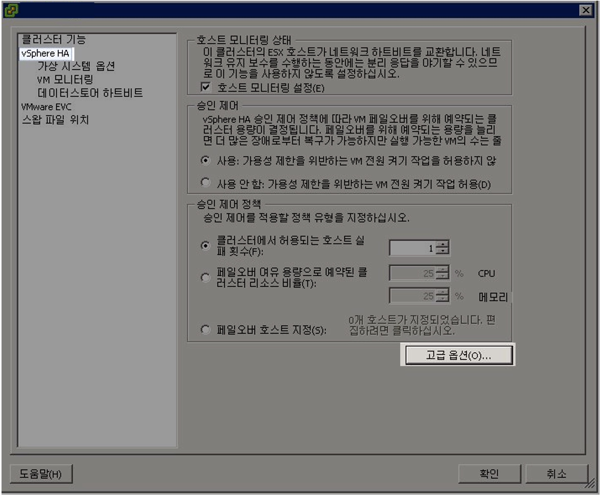
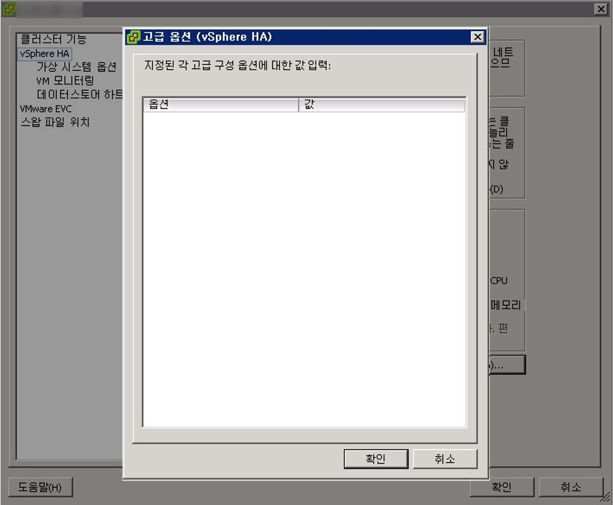
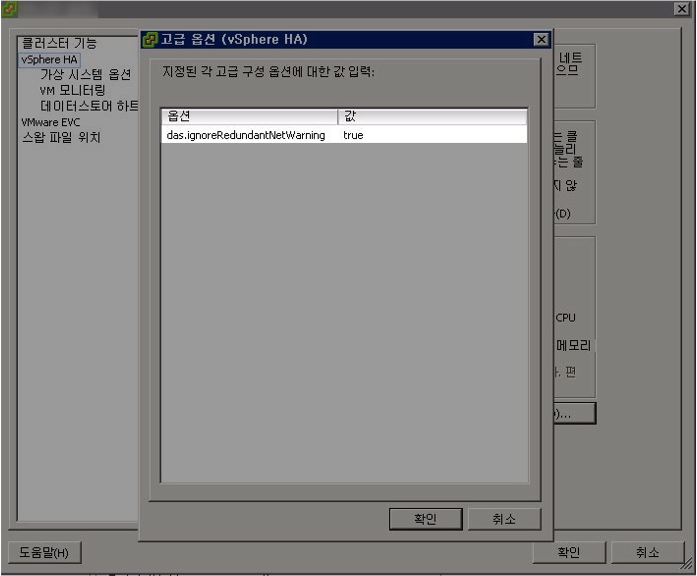
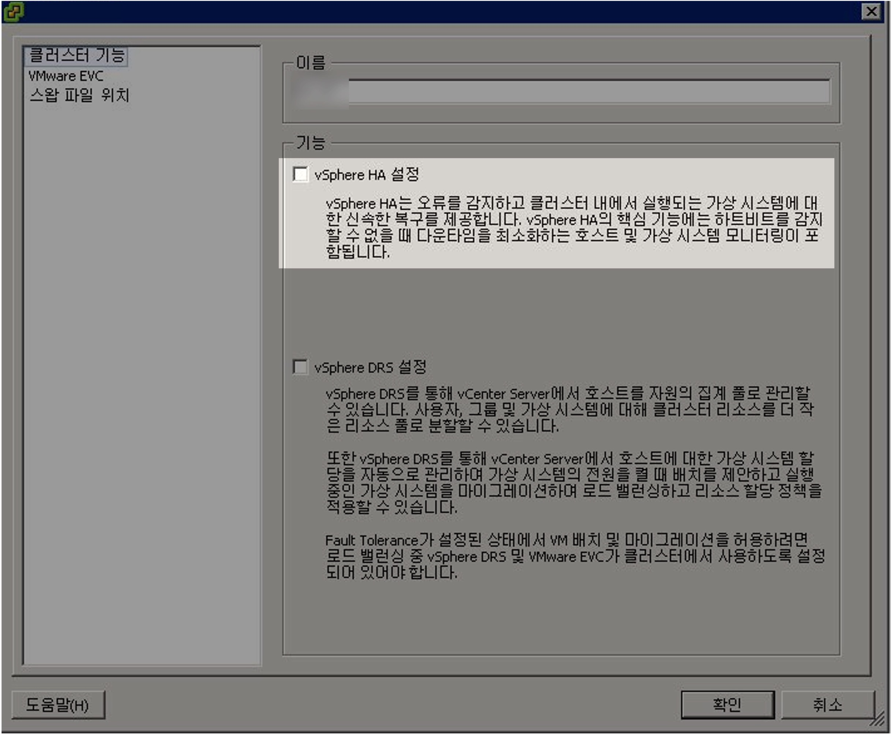
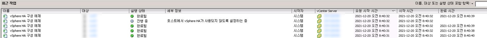
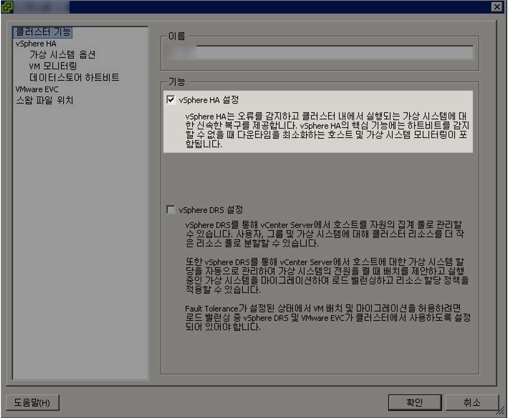

vSphere 네트워크 이중화 알람 끄기
개요
vSphere HA 구성시 발생하는 네트워크 이중화 관련 알람을 강제로 끌 수 있습니다.
환경
- vSphere : vSphere Client 5.5
- 호스트 클러스터 : vSphere HA를 사용하여 클러스터 구성된 상태입니다.
배경지식
ESXi 5.5의 기술지원 상태
ESXi 5.5와 vSphere 5.5는 기술지원 및 유지보수가 완전히 종료된 버전의 제품으로, 프로덕션 환경에서 해당 제품을 사용하는 건 매우 위험합니다.
- End of General Support (EOS) : 2018년 9월 19일에 종료됨
- Technical Guidance (EOL) : 2020년 9월 19일에 종료됨
- 관련문서 : End of General Support for vSphere 5.5 (51491)
문제점
여러 대의 호스트로 구성된 클러스터에서 vSphere HA를 구성한 후, 느낌표 아이콘과 함께 네트워크 이중화 관련 알람이 발생했습니다.

- 한글 메세지 : 현재 이 호스트에 관리 네트워크 이중화가 없음
- 영문 메세지 :
Host <xxx> currently has no management network redundancy
해결방안
1. 근본적 해결방법
VMware에서는 vSphere HA 구성시 호스트의 네트워크 이중화를 권장합니다.
Host <xxx> currently has no management network redundancy 알람을 없애는 근본적인 방법으로는 실제 호스트 서버의 네트워크를 이중화해서 안정적 구성을 완성하면 됩니다.
2. 대안
네트워크 이중화를 즉시할 수 없는 상태라고 하면, 대책방안으로 vSphere HA의 고급 파라미터를 설정해 네트워크 이중화 알람을 끌 수 있습니다.
이 가이드에서는 2. 대안 방법에 대해서 설명합니다.
상세 절차
VMware vSphere Client 로그인
vSphere Client 프로그램에 로그인합니다.

현재 시나리오에서는 개별 호스트로 접속하는 것이 아닌 전체 호스트를 관리하는 vCenter로 접속합니다.
호스트 상태 확인
vSphere HA 설정후 네트워크 이중화 구성된 상태가 아니기 때문에 호스트 전체에 경보가 발생한 상태입니다.
호스트 아이콘 옆에 노란색 느낌표 표지판이 네트워크 이중화 알람이 발생했음을 의미합니다.
호스트 → 구성 → 하드웨어 → 네트워킹 메뉴로 들어갑니다.

실제로 Management Network가 연결된 물리적 어댑터(호스트 서버의 물리 포트)가 vmnic4 1개 뿐인 구성인 점을 확인할 수 있습니다.
만약 Management Network에 물리적 어댑터가 2개 연결되어 있을 경우, 네트워크 이중화 조건을 충족했기 때문에 네트워크 이중화 알람은 발생하지 않습니다.
설정 편집

클러스터 아이콘 우클릭 → 설정 편집(E)… 을 클릭합니다.
vSphere HA 고급 옵션
호스트의 설정 편집 창입니다.

파라미터 설정을 위해 vSphere HA 메뉴 → 고급 옵션(O)… 버튼을 클릭합니다.
파라미터 설정
고급 옵션(vSphere HA)에는 호스트 서버에 파라미터 값을 설정해 세부 설정을 적용하고 운영할 수 있습니다.

기본적으로는 입력된 파라미터가 없습니다.
네트워크 이중화 구성 알람을 끄기 위해 아래 값을 입력합니다.
옵션과 값은 대소문자를 구분하므로 입력값이 아래와 완전히 일치해야 합니다.
- 옵션 :
das.ignoreRedundantNetWarning - 값 :
true

파라미터 입력 → 확인
vSphere HA 재구성
새로 설정한 das.ignoreRedundantNetWarning 파라미터를 vSphere HA 클러스터에 적용을 위해 vSphere HA 구성을 해제했다가 재구성합니다.

클러스터 기능 메뉴 → vSphere HA 설정 체크해제 → 확인

vSphere Client 프로그램 하단의 최근 작업 리스트에 vSphere 구성 해제 작업이 진행중인 걸 확인할 수 있습니다.
vSphere HA를 다시 구성합니다.

클러스터 기능 메뉴 → vSphere HA 설정 체크 → 확인
알람 해제 확인
vSphere HA 구성이 끝나면 새롭게 설정한 파라미터가 클러스터에 적용됩니다.
das.ignoreRedundantNetWarning 파라미터가 적용되면 네트워크 이중화 구성 알람이 사라집니다.
위 사진처럼 vSphere HA 클러스터를 구성하는 호스트 전체에 노란색 느낌표 아이콘이 사라진 걸 확인할 수 있습니다.
결론
네트워크 이중화 알람을 무시하도록 설정하는 것은 근본적인 해결 방법은 아니므로 반드시 대안alternative으로만 사용합니다.
개발사인 VMware은 물리적 네트워크 이중화 구성을 강력하게 권장하고 있습니다.
참고자료
VMware의 Knowledge Base 공식문서 1004700
Network redundancy message when configuring vSphere High Availability in vCenter Server (1004700)